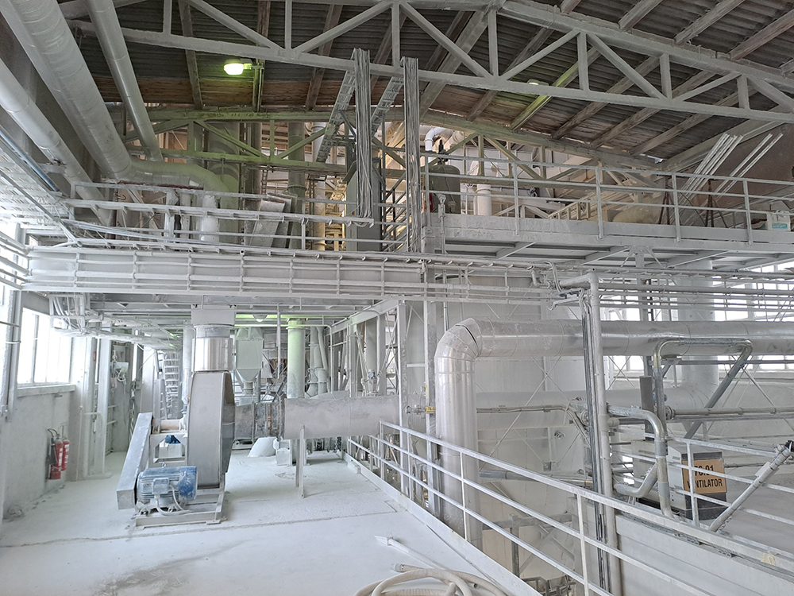

Chemical
Cinkarna Celje, Surface Treatment 2
A TiO2 finishing plant on Siemens S5 and Factory Link SCADA, 30 years of undocumented changes and no spare parts. Rebuilt on Siemens PCS7 with PROFINET and tested on a SIMIT plant simulation before commissioning.
2018 to 2021Delivery
PCS7, APL, SIMITTechnology